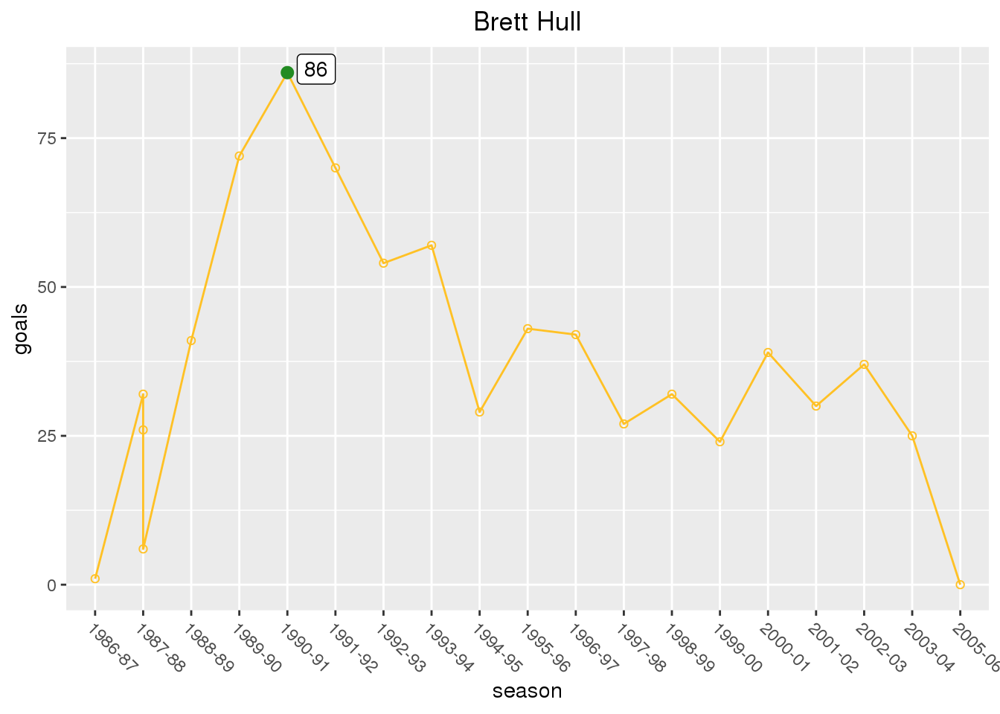
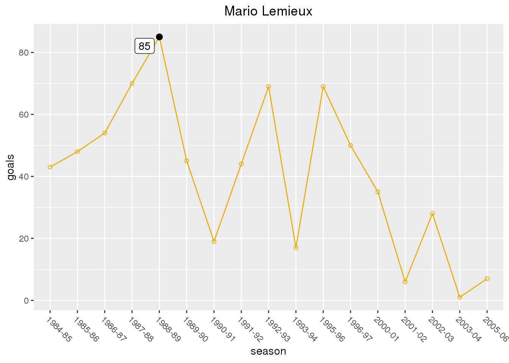
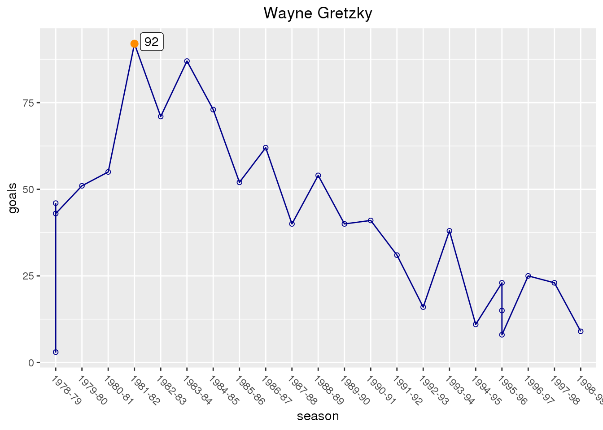
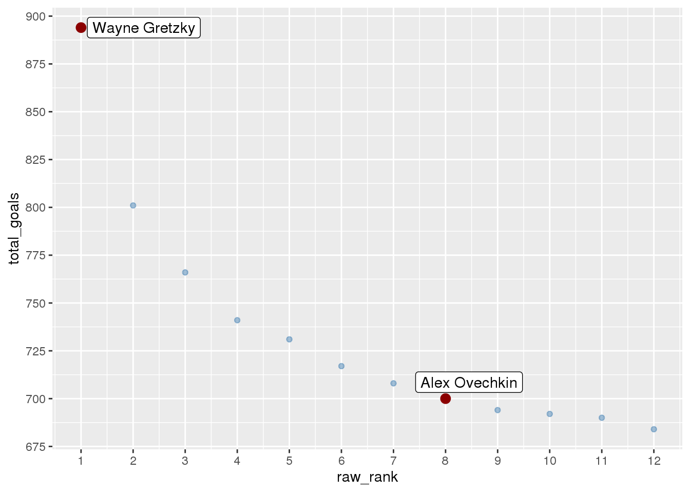

Data
In this project I will be examining NHL goal data using the season_goals.csv dataset from HockeyReference.com (they put out the other two datasets used in this post as well) that they put out after future hall-of-famer Alexander Ovechkin scored his 700th career goal. The dataset consists of 4810 observations of 23 variables. The variable season represents how many goals NHL players scored in individual seasons throughout their career. The player variable represents the individual player, and the goals variable represents the amount of goals an individual player scored within that season. The season variable represents an individual NHL season. To investigate this data it must be filtered to only include the upper echelon of goal scorers, otherwise the graphics will be flooded with data and become hard to decipher.
The second dataset I will be using is the top_250.csv. This dataset is for the career goals scored for the players in the top 250 of that category. The player variable represents the individual players. This dataset consists of 251 observations of 9 variables. The raw_rank variable represents where a player lies on the list of top 250 for most career goals scored. The total_goals variable represents the total goals scored in the individual player’s NHL career. This data must also be filtered since the players being analyzed are in the top tier of goal scorers, and including others would just muddle the results.
library(tidyverse)
season_goals <- read_csv("season_goals.csv")
top_250_career <- read_csv("top_250.csv")
Question 1
Everyone who knows anything about hockey understands that Ovechkin is a prolific goal scorer, but how does he measure up against the other great goal scorers in NHL history?
# filter to only include seasons of > 60 goals scored
GOAT_goal_scorers <- season_goals %>%
filter(goals > 60)
I filtered out the data to only count seasons where a player scored 60 or more goals, because 1) there was too much data otherwise, and 2) it gives a better sense of who had the most seasons with a way-above-average number of goals scored.
ggplot(GOAT_goal_scorers, mapping = aes(player, goals, fill = player)) +
geom_boxplot() +
theme(axis.text.x = element_text(angle = -90, hjust = 0)) +
theme(legend.position = "None") +
# this is just so the color of the boxplots match the team, ore one of the teams, the player played for
scale_fill_manual(values = c("Alex Ovechkin" = "red4", "Alexander Mogilny" = "navy", "Bernie Nicholls" = "gray4", "Bobby Hull" = "red4", "Brett Hull" = "green4", "Jari Kurri" = "orangered", "Jaromir Jagr*" = "yellow3", "Lanny McDonald" = "red3", "Luc Robitaille" = "darkorchid4", "Mario Lemieux" = "yellow2", "Mike Bossy" = "chocolate1", "Phil Esposito" = "gold", "Reggie Leach" = "darkorange", "Steve Yzerman" = "red3", "Teemu Selanne" = "navyblue", "Wayne Gretzky" = "mediumblue"))
This graphic gives an interesting insight into Ovechkin’s place among the all-time goal scoring greats in the history of the NHL. He has one 60+ goal season, which puts him in elite company. However, he still isn’t quite on the level of other all-time great goal scorers like Wayne Gretzky, they call him “The Great One” for a reason, Brett Hull, and “Super Mario” Lemieux.
However, this graph is not the end all be all in determining the caliber of goal scorer. Maurice “Rocket” Richard played for the Montreal Canadiens from 1942-1960 and was an elite goal scorer, just look at his then record 544 career goals upon retirement. He was so elite that the Maurice “Rocket” Richard Trophy, also known as the Rocket Richard Trophy, that is awarded annually to the leading goal scorer in the National Hockey League is named after him. However, he played in the Original Six era where they played 70 games a season compared to 80 games a season when Gretzky started out, and the 82 games played each season in the modern day. Because of this Richard never scored 60+ goals in one season, but that shouldn’t automatically exclude him (and other Original Six Era greats like Gordie Howe for that matter) from the discussion of best goal scorers of all time.
Question 2
My next question that I want to investigate is how Ovechkin’s path as a prolific goal scorer in his career compares to the career trajectories of the other greats that stood out in the previous graphic: Wayne Gretzky, Mario Lemieux, and Brett Hull.
library(gghighlight)
season_goals %>%
filter(player == "Alex Ovechkin") %>%
ggplot(season_goals, mapping = aes(season, goals)) +
geom_point(shape=21, col = "midnightblue") +
geom_line(color="red", group = 1) +
# I labeled the season in which each player scored their career high for goals in one season to show the exact number of goals they scored since I will be referencing those numbers later
gghighlight(max(goals) > 60,
label_key = goals,
unhighlighted_colour = alpha("red", 1)) +
geom_point(col = "midnightblue", size = 2.5) +
theme(axis.text.x = element_text(angle = -45, hjust = 0)) +
ggtitle("Alex Ovechkin") +
theme(plot.title = element_text(hjust = 0.5)) +
# I expanded the y limit to emphasize how consistently exceptional Ovechkin is with his production, as he doesn't have a single season where he has scored less than 30 goals
ylim(0, 70)
## Warning: The `unhighlighted_colour` argument of `gghighlight()` is deprecated as of gghighlight 0.2.0.
## Please use the `unhighlighted_params` argument instead.
## This warning is displayed once every 8 hours.
## Call `lifecycle::last_warnings()` to see where this warning was generated.

season_goals %>%
filter(player == "Brett Hull") %>%
ggplot(season_goals, mapping = aes(season, goals)) +
geom_point(shape=21, col = "forestgreen") +
geom_line(color="goldenrod1", group = 1) +
gghighlight(max(goals) > 80,
label_key = goals,
unhighlighted_colour = alpha("goldenrod1", 1)) +
geom_point(col = "forestgreen", size = 2.5) +
theme(axis.text.x = element_text(angle = -45, hjust = 0)) +
ggtitle("Brett Hull") +
theme(plot.title = element_text(hjust = 0.5))

season_goals %>%
filter(player == "Mario Lemieux") %>%
ggplot(season_goals, mapping = aes(season, goals)) +
geom_point(shape=21, col = "gray0") +
geom_line(color="darkgoldenrod2", group = 1) +
gghighlight(max(goals) > 80,
label_key = goals,
unhighlighted_colour = alpha("darkgoldenrod2", 1)) +
geom_point(col = "gray0", size = 2.5) +
theme(axis.text.x = element_text(angle = -45, hjust = 0)) +
ggtitle("Mario Lemieux") +
theme(plot.title = element_text(hjust = 0.5))

season_goals %>%
filter(player == "Wayne Gretzky") %>%
ggplot(season_goals, mapping = aes(season, goals)) +
geom_point(shape=21, col = "darkorange") +
geom_line(color="darkblue", group = 1) +
gghighlight(max(goals) > 90,
label_key = goals,
unhighlighted_colour = alpha("darkblue", 1)) +
geom_point(col = "darkorange", size = 2.5) +
theme(axis.text.x = element_text(angle = -45, hjust = 0)) +
ggtitle("Wayne Gretzky") +
theme(plot.title = element_text(hjust = 0.5))

*For certain players there are years where there are 3 dots representing total goals in a season instead of one. This is represents a year in which the player was traded, so there is a dot representing goals scored with each team, and a dot representing total goals.
*Brett Hull was traded from the Calgary Flames to the St. Louis Blues in the 1987-1988 season. He scored 26 goals with Calgary, 6 goals with St. Louis, and 32 overall.
*Wayne Gretzky was traded twice. While the Edmonton Oilers were still in the WHA Gretzky was traded to them by the Indianapolis Racers in the 1978-1979 season. He scored 3 goals with Indianapolis, 43 goals with Edmonton, and 46 total. The second trade was in the 1995-1996 season when the Los Angeles Kings traded him to the St. Louis Blues. He scored 15 goals with Los Angeles, 8 goals with St. Louis, and 23 goals total.
When comparing the data there is one factor that separates Ovechkin from Hull, Lemieux, and Gretzky: Ovechkin is the only one that does not have an 80 goal season. Since Ovechkin’s strongest trait is goal scoring this could be seen as something that might possibly hurt his reputation as one of the best goal scorers. However, the outlook for Ovechkin may not be as grim as that last statement might have made it seem. Super Mario’s 85 goal season was a large outlier, and this can be seen on the boxplot that represents his production in question 1 as well as in this graphic since it shows he does not have another season of more than 70 goals. Brett Hull’s 86 goal season in 1990-1991 was not an outlier, but his production steadily went down the rest of his career as he did not have over 50 goals after his 7th season in 1993-1994. Gretzky had multiple (he even had a 90 goal season) but, he is called “The Great One” for a reason. But of the four players Ovechkin had the most instant impact with 52 goals in his rookie season. This is the most for a rookie season compared to the other three. Hull had 26, Lemieux had 43, and Gretzky had 46. On top of this, Ovechkin has never had a season where he scored under 30 goals whereas after their amazing seasons the other three players regressed. Ovechkin doesn’t have the best individual goal scoring seasons of the four, but he is the most consistent.
Question 3
My final question is where does Ovechkin fall on the list of the most total career goals scored all time, and whether or not it is possible for him to eventually set the record for most career goals before he retires.
library(gghighlight)
top_250_career %>%
# I once again filtered the graph to where there was a minimum requirement for goals scored since Ovechkin and Gretzky are the two players being compared I didn't want too much going on in the background
filter(total_goals > 675) %>%
ggplot(top_250_career, mapping = aes(raw_rank, total_goals)) +
geom_point(col = "darkred") +
gghighlight(raw_rank %in% c(1, 8),
label_key = player,
unhighlighted_colour = alpha("steelblue", 0.5)) +
geom_point(col = "darkred", size = 3) +
scale_x_continuous(breaks = round(seq(min(0), max(14), by = 1),1)) +
scale_y_continuous(breaks = round(seq(min(0), max(900), by = 25),1))

This graphic highlights Gretzky and Ovechkin on a list of top goal scorers of all time. Gretzky is currently in 1st with 894 goals, and Ovechkin is currently in 8th with 700 goals. Since the making of this data set Ovechkin scored 6 more goals before the stoppage due to COVID to reach a grand total of 706 career goals, which happens to put him 2 goals behind number 7 on the all time list Mike Gartner who had 708 career goals. Ovechkin has played in the NHL for 15 seasons. To get an average of how many goals he scores per season we can divide his 706 career goals by his 15 seasons.
a <- 706 / 15
print(a)
## [1] 47.06667
Now, since Ovechkin has 186 less career goals than Gretzky we’ll divide that number by his career goals per season average to see how many seasons of similar production it would take to catch Gretzky.
186 / a
## [1] 3.951841
So this means it would take Ovechkin roughly 4 more seasons of production similar to what he’s putting up now to catch Gretzky and have the most career goals of all time. Ovechkin is 35 years old, so banking on him having averaging about 47 goals a season for the next 4 seasons might not be very realistic since he is likely due for a decrease in production. However, Ovechkin is one of the best ever at consistently scoring a lot of goals. He has the second most 40-goal seasons of all time with 11, 1 less than Gretzky’s 12. He also comes in second place all time for 50-goal seasons with 8, Gretzky and Mike Bossy are tied for first with 9. So it may not be farfetched to say he could accomplish this feat.
Conclusion
Ovechkin’s career is not even over yet he is already in elite company thanks to his goal scoring prowess. The purpose of this investigation was to see if he would be able to one day have the title as the greatest goal scorer of all time. The findings suggest that even though he is likely due for a dip in production, surpassing Gretzky does not look like an unattainable goal for Alexander Ovechkin.
However, does he even have to surpass Gretzky to attain this title? Gretzky has more goals, but he also played in an era where players simply scored much more than they do now. According to Steve Dongle of Sportsnet, in the 2016-2017 season NHL teams averaged 227 goals for and 227 against, or about 5.5 goals per game. In the 1981-1982 season where Gretzky scored an unthinkable 92 goals that number was over 8 goals per game. Because of cases like this hockey-reference.com has era-adjusted numbers for goals scored in a season to account for how difficult, or not difficult, it was to score in the era the player played in. Before this, Gordie Howe’s 49 goals in the 1952-1953 season would never have been brought up as one of the top goal scoring seasons of all time. But, after adjusting for era his number of “adjusted goals” is 65 which is 11th all-time, which as a Red Wings fan makes me very happy. The reason Mr. Hockey’s total went up so much can be chalked up to the seasons back then being only 70 games long, and the goals per game being 4.77.
But what about Ovechkin’s career-high 65 goals in the 2007-2008 season? The number of adjusted goals for Ovechkin in that season is 72, second only to Brett Hull’s 78 that came from his 86 goal season in 1990-1991. When looking at career records for adjusted goals scored Gordie Howe is 1st with 925, I mean he did play 35 seasons, Jagr is 2nd with 841, and Ovechkin is 3rd with 798. This added wrinkle in the analysis of Ovechkin’s status among the goal scoring elite boosts his argument for being one of the best ever at putting the puck in the net. Not to mention what would have been his rookie season in 2004-2005 was cancelled due to a lockout, the 2012-2013 season (in which he had 32 goals and was on pace for 55) was shortened also due to a lockout, and the 2019-2020 season (in which he was tied for the league lead in goals with 48 and was on pace to score 58) was cut short because of COVID. His numbers would likely be much higher if it wasn’t for this. Had these crazy incidents not happened Ovechkin would likely be much closer to having the most career goals scored of all time, and that’s without even adjusting for era. In conclusion, based off of my analysis I firmly believe Ovechkin will be the best goal scorer of all time by the time he retires- that is if he isn’t already.